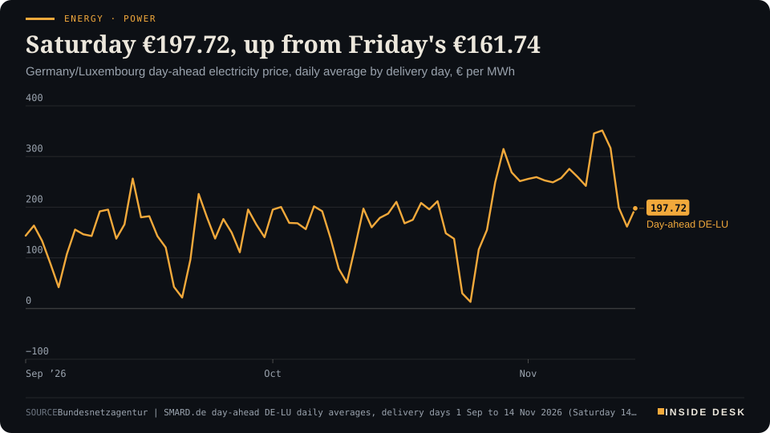
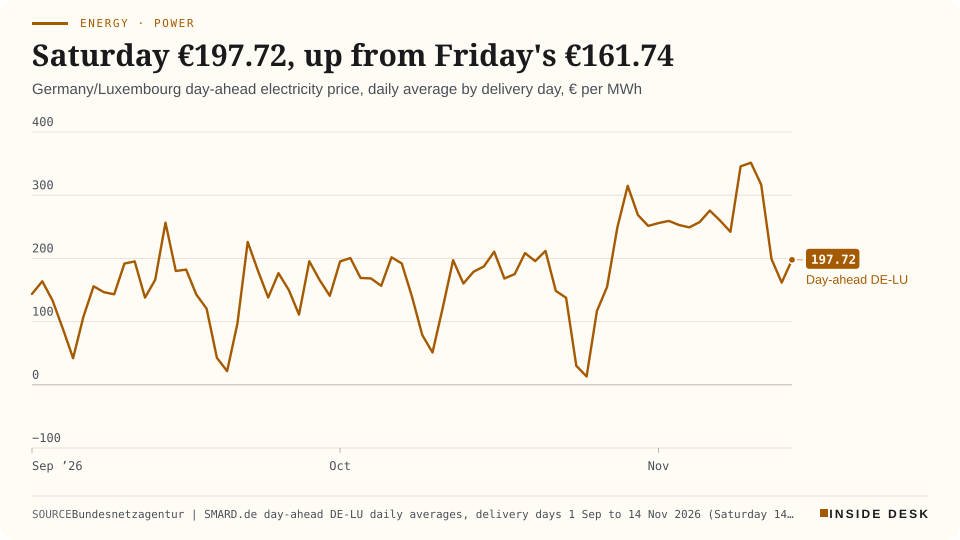
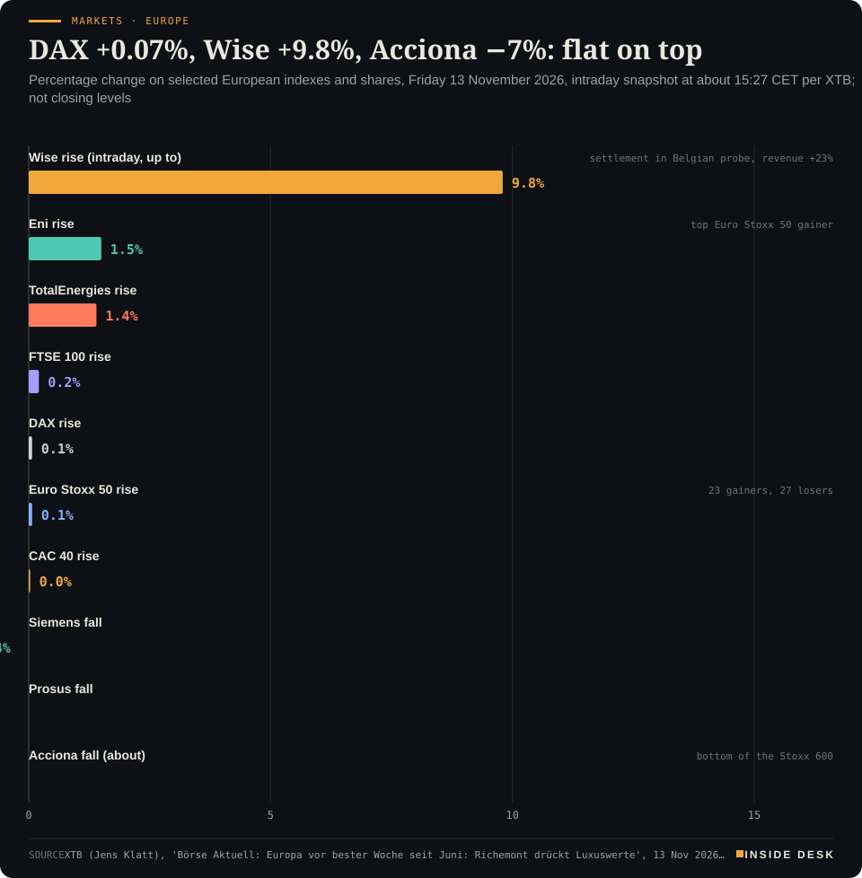
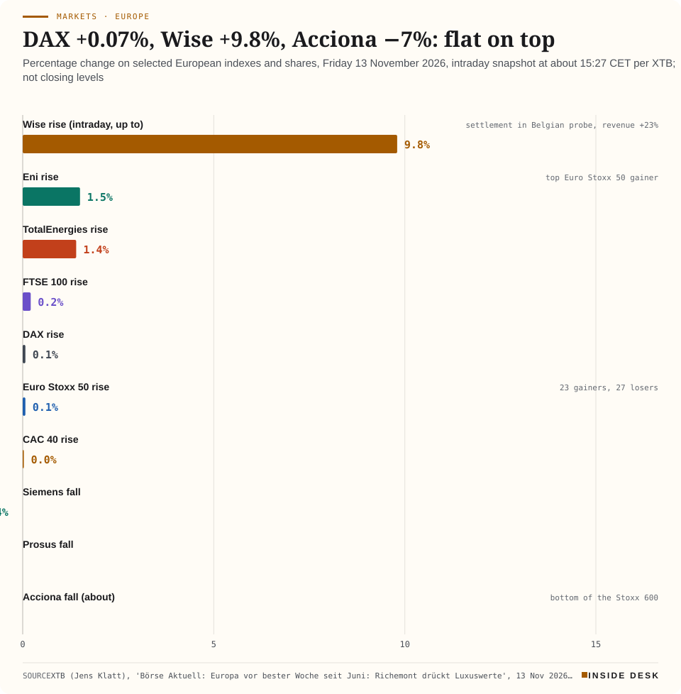

Inside Desk ePaper, Evening ePaper · Fri 13 Nov 2026
Friday, 13 November 2026Always free
Inside Desk
Evening ePaperPublished 17:30 CET · Berlin
Lead · Energy & Industry
Saturday's power was bought on Friday for more than Friday's, while the oil watchdog sees a barrel back in surplus. Also: a flat DAX over busy shares, the 2027 budget signed off with one promise left open, new powers and new checks for the intelligence services, a record month in England's A&E, and Spain's new olive oil near three euros.
Energy · PowerSaturday €197.72, up from Friday's €161.74Germany/Luxembourg day-ahead electricity price, daily average by delivery day, € per MWh


Line chart of the daily average German-Luxembourg day-ahead electricity price from 1 September to 14 November 2026, in euros per megawatt hour. It falls to €13.12 on Sunday 25 October, climbs to €314.85 on Thursday 29 October and stays between €242.13 and €275.64 from 2 to 8 November. In the week of 9 November it reads €345.64 on Monday, a record €351.48 on Tuesday, €316.65 on Wednesday, €199.05 on Thursday and €161.74 on Friday. The latest value is €197.72 for delivery on Saturday 14 November, €35.98 above Friday and €62.11 below the previous Saturday, 7 November, at €259.83.
Source: Bundesnetzagentur | SMARD.de day-ahead DE-LU daily averages, delivery days 1 Sep to 14 Nov 2026 (Saturday 14 Nov €197.72, auction of 13 Nov), retrieved 13 Nov 2026, 16:31 CET · CC BY 4.0 · CSV
Geo-economics · p. 5
Markets & Macro · p. 6
Climate & Weather · p. 16
The day in one sentenceThe Bundestag gave the intelligence services new powers and a panel of former judges to check them first, the DAX took a breather after its record, and the pumps passed on a week of cheaper oil; on Friday the checks mattered as much as the powers.
ContentsInside Desk · Evening ePaper13 November 2026
Saturday's power was bought on Friday for more than Friday's, while the oil watchdog sees a barrel back in surplus. Also: a flat DAX over busy shares, the 2027 budget signed off with one promise left open, new powers and new checks for the intelligence services, a record month in England's A&E, and Spain's new olive oil near three euros.
11 edition pieces · 11 desks · Published 17:30 CET, 13 November 2026
22 ePaper extras, added , 13 November. They appear only in the ePaper and carry their own time.
17:30 Evening ePaper, updated live until 22:30 with an “Updated” time and a Latest page
Sun 10:00 The Sunday Magazine
Berlin time. Every issue is free.
How to read it
Swipe, use the arrow keys or the page strip. Tap any headline for the reading view. Press / to search, t for contents, +/− to zoom. Download the PDF.
LatestInside Desk · Evening ePaper13 November 2026
Latest
Live: this page and the issue are updated until 22:30 Berlin time.
Markets: Stoxx 600 record close, DAX ends the week up 3.6%
LeadInside Desk · Evening ePaper13 November 2026
Energy & Industry · Lead · 3 min
Saturday's power was bought on Friday at €197.72, more than Friday's. Meanwhile the oil watchdog says the barrel is back in surplus and gas had its dearest week in a while. Read the invoices, not the mood.
You would expect a Saturday to be cheap. Factories idle, offices dark, demand down. The auction for Saturday 14 November cleared on Friday, and it says otherwise. Delivery on Saturday will average €197.72 per megawatt hour for Germany and Luxembourg, against €161.74 for Friday1. Desk arithmetic: that is €35.98, or about 22%, dearer than the day before, and it ends three straight falls since Tuesday’s record €351.481.
The forecasters do not expect more demand. SMARD’s forecast puts Saturday’s consumption at about 1,252.8 GWh, against 1,449.3 GWh for Friday2. Desk arithmetic: roughly 196 GWh, or 13.6%, less power wanted, and a higher price for it. Something else has to give, and the one public number that would tell us what, Saturday’s wind forecast, had not been published when we checked at 16:32 CET2. We will not fill that gap with a guess.
Energy · PowerSaturday €197.72, up from Friday's €161.74Germany/Luxembourg day-ahead electricity price, daily average by delivery day, € per MWh
Line chart of the daily average German-Luxembourg day-ahead electricity price from 1 September to 14 November 2026, in euros per megawatt hour. It falls to €13.12 on Sunday 25 October, climbs to €314.85 on Thursday 29 October and stays between €242.13 and €275.64 from 2 to 8 November. In the week of 9 November it reads €345.64 on Monday, a record €351.48 on Tuesday, €316.65 on Wednesday, €199.05 on Thursday and €161.74 on Friday. The latest value is €197.72 for delivery on Saturday 14 November, €35.98 above Friday and €62.11 below the previous Saturday, 7 November, at €259.83.
Source: Bundesnetzagentur | SMARD.de day-ahead DE-LU daily averages, delivery days 1 Sep to 14 Nov 2026 (Saturday 14 Nov €197.72, auction of 13 Nov), retrieved 13 Nov 2026, 16:31 CET · CC BY 4.0 · CSV
Keep the week in proportion. Saturday’s €197.72 is still €62.11 below the previous Saturday, 7 November, at €259.831. Desk arithmetic: about 24% cheaper week on week. One dearer day after a windy fall is a correction in the ledger, not a reversal of it.
Friday was the windy one. The regulator’s forecast for Friday was about 682.1 GWh of onshore wind and 137.4 GWh offshore2. Desk arithmetic: 819.5 GWh together, about 1.7 times Thursday’s realised 480 GWh. By 16:00 CET the meters had already logged about 441.1 GWh onshore and 93.5 GWh offshore2: 534.6 GWh in sixteen hours, more than all of Thursday (desk arithmetic). Friday’s cheapest hour, 12:00 to 13:00, cost €90.511; its dearest, 17:00 to 18:00, €226.201.
Read the hours, not the average. Saturday’s cheapest hour is 12:00 to 13:00 at €146.28; the dearest is 17:00 to 18:00 at €263.371. Desk arithmetic: a spread of €117.09 inside one day, wider than the gap between Friday and Saturday’s averages three times over. If you are on a dynamic tariff, the washing machine at lunch and the oven after seven is not lifestyle advice; it is the published price list1. On a fixed tariff, none of this reaches your bill this week.
Gas had a dear week. In the dark evening hours, gas plants are often the ones bidding, so the fuel’s price is never far from yours. …
Geo-economicsInside Desk · Evening ePaper13 November 2026
Geo-economics · 2 min
Iran's Revolutionary Guards say an LNG carrier hit a mine on an "unauthorised" route. Nobody independent has confirmed it, and the ship has not been named.
On Friday it was a gas carrier. Iran’s Revolutionary Guards navy said a tanker carrying liquefied natural gas struck a naval mine and suffered an explosion in the Strait of Hormuz while using what it called an “unauthorized and dangerous route”, Iranian state media reported1. No details of the vessel were immediately available1. The Guards added that it had been “under the protection of American fighter jets”2.
That follows Thursday’s claims about four oil tankers, which Iranian bodies described in differing ways: first an “accident” with a “violent explosion”, later “hitting a naval mine”3. The tankers were not named either3. Against that stands the other side of the ledger: there has been no confirmation from UKMTO, the US or any independent source, analysts at ISW-CTP say they have “not observed any indicators” that Iran has successfully re-mined the strait, and the US military recently said all mines had been cleared2.
What can be counted is counted elsewhere. Data from the Washington Institute for Near East Policy, cited by Reuters, show at least 10 ships hit in the first 10 days of November, after 37 attacks in October, the highest monthly tally since the conflict began in late February1. Reuters also notes that traffic has rebounded and oil prices have fallen on expectations of de-escalation1. Desk arithmetic: 37 attacks in 31 days is about 1.2 a day; 10 in 10 days is about one a day. Slower, not stopped.
For you: a gas cargo matters to Europe’s winter more than a headline does, but only once it has a name, an owner and a destination. Until then, the useful numbers are the ones you can audit: incident tallies, insurers’ notices and the ships that actually arrive. Nothing here is investment advice.
Geo-economics · Short item · ePaper extra, added
Beijing says Xi will chair the summit and hold bilateral talks. On a Xi-Trump-Putin meeting it says only that it is "in communication".
Beijing put dates on the calendar on Friday. Xi Jinping will chair and address the 33rd APEC Economic Leaders’ Meeting in Shenzhen on 18 and 19 November, give a keynote at the APEC CEO Summit on 17 and 18 November, and hold bilateral talks with visiting leaders, China’s Foreign Ministry announced1. The theme is “Building an Asia-Pacific Community to Prosper Together”1.
The meeting that would make the headlines is not on the published programme. Asked about a possible meeting of Xi, Donald Trump and Vladimir Putin, Foreign Ministry spokesperson Mao Ning said on Thursday: “China is in communication with relevant parties regarding a meeting between the three heads of state”, adding that more would be released when available1. …
Geo-economics · Brief · ePaper extra, added
Russia’s defence ministry said it intercepted 1,198 Ukrainian drones overnight to Friday across more than 15 regions, with oil infrastructure among the targets1. Ukraine’s General Staff said it struck one of Russia’s largest oil refineries in Volgograd, hitting oil processing units, six reservoirs and other parts of the complex2. Regional governor Andrei Bocharov said attacks on an industrial area in Volgograd killed four people1. Ukraine has concentrated its fire this year on Russia’s oil infrastructure to cut the export earnings that fund the invasion1.
For you: refinery damage shows up first in Russia’s own fuel balance and export schedules, not in your pump price. Watch product-export data, not the videos. Nothing here is investment advice.
Markets & MacroInside Desk · Evening ePaper13 November 2026
Markets & Macro · 2 min
Europe's indexes spent the last day of their best week since June barely moving. The shares inside them did not get the memo.
At 15:27 CET on Friday, the DAX and the Euro Stoxx 50 were each up 0.07%, the CAC 40 up 0.03% and the FTSE 100 up 0.21%, per XTB1. Among the fifty Euro Stoxx members, 23 were up and 27 down1. That is what a calm Friday looks like from above. These are snapshots, not closes; the settled numbers arrive after our press time.
Underneath, it was not calm. Wise rose as much as 9.8% after a settlement in a Belgian investigation and 23% revenue growth; Acciona fell about 7%, last in the Stoxx 600, after its renewables arm admitted it would miss a €2 billion asset-sale target1. Richemont, the owner of Cartier, lost between 4% and 6%, at one point 9%, although its half-year operating profit rose 33% to €3.13 billion1. Investors marked down slower jewellery growth, 14% in the second quarter after 24% in the first, and a 7% fall in Middle East and Africa sales1. The profit was a record; the share price graded the slope.
Markets & Macro · Short item · ePaper extra, added
America's producer prices rose a little less than expected in October. The detail says where the cost went next: into lorries.
America’s producer price index for final demand rose 0.3% in October, after 1.4% in September, the Bureau of Labor Statistics said at 14:30 CET1. Over twelve months it is up 6.5%, the largest rise since November 20221. Markets had expected 0.4% and 6.6%, per Newsquawk2.
Read the line items, not the headline. Diesel fuel prices fell 7.9% in October and crude petroleum 10.3%1. …
Markets & Macro · Brief · ePaper extra, added
The DAX stood barely changed at 26,767 points on Friday afternoon1. Two shares were not part of the calm.
Rheinmetall fell 1.9% to its lowest level since February 2025, dpa-AFX reported; since January’s high of €1,966 its loss adds up to about 60%1. Deutsche Pfandbriefbank, the commercial-property lender, dropped 6.5% to a record low, about 38% down since the start of the year, a day after weak quarterly figures and a surprise cut to its annual targets1.
Different stories, one lesson. A defence boom priced as a certainty and a property book priced as a recovery both met the same auditor: the next set of numbers. Nothing here is investment advice.
Markets & Macro · Brief · ePaper extra, added
The Stoxx 600 closed up 0.13 points, or 0.02%, at 664.14: a new record close, its fifth gain in a row and its best week since early July, up 2.44%1. The DAX closed down 21.93 points, or 0.08%, at 26,749.95, its second-highest close on record, still up 3.6% on the week2. Infineon fell 4.3% at the bottom of the DAX as chip shares sold off3; Wise closed up 7.7% at the top of the Stoxx 600 and Acciona down 8% at the bottom4. Investors are caught “between record mood and loss aversion”, wrote Timo Emden of CapTrader (our translation)3. One index made a record and the other missed one, both by less than a tenth of a per cent. The week did the work; Friday only signed it. Not investment advice.
Politics & InstitutionsInside Desk · Evening ePaper13 November 2026
Politics & Institutions · 2 min
After about 16 hours, the budget committee closed the 2027 budget. The one promise voters would feel, a lower electricity tax for everyone, goes back to the coalition leaders on Tuesday.
The night session ended on Friday morning, and the number is a record. After a final sitting of about 16 hours, the budget committee approved federal spending of about €560.9 billion for 2027, €5.5 billion more than the government had proposed and €36.4 billion, or 6.9%, more than in 20261. “The lid is now on,” the SPD parliamentary manager Wiese said on ARD-ZDF morning television, as BR reported it2.
The lid does not cover everything. Whether Union and SPD can still fund a cut in electricity tax for all consumers is unresolved, and the coalition leaders will discuss it on Tuesday1. Friedrich Merz said in Dublin he was holding to his goal of cutting the tax “to the European minimum” from next year “in full”; Lars Klingbeil said he was open to it, but only with “serious” counter-financing1. The cut would need about €5.4 billion, a sum WirtschaftsWoche calls almost small against the total, but no counter-financing proposal is yet known1. Ideas reported include EEG account surpluses, cuts to Climate and Transformation Fund programmes, or the CSU giving up its extended mothers’ pension; CDU budget politician Christian Haase called the last of those unrealistic1.
The ledger underneath: net borrowing in the core budget rises from €98.0 billion to almost €123 billion, plus €57.8 billion from the infrastructure fund and €29.6 billion from the Bundeswehr fund, more than €210 billion of new debt in all1. Only 2021, the Covid year, was higher, at €215.4 billion1. Desk arithmetic: €123 billion of €560.9 billion is about 22% of core spending; WirtschaftsWoche’s “every third euro” counts the special funds as well1. The debt brake is still met, because special-fund borrowing and some defence debt are exempt1.
For you: the electricity tax is the line that reaches your meter, and it is the one big promise still without a counter-financing plan1. …
Politics & Institutions · Short item · ePaper extra, added
From Dublin, the chancellor asked Trump not to repeat Anchorage in China. Berlin will host more than 20 leaders of the Coalition of the Willing on 19 November.
Friedrich Merz chose plain words in Dublin on Friday. Ahead of expected talks next week between Donald Trump and Vladimir Putin in China, he said: “Some here in Dublin fear this could turn into a ‘second Anchorage moment’”1. His message to the United States: “please, no surprises. Continue to play as part of ‘Team Europe’ and ‘Team Ukraine’”1.
The labour and social affairs ministry remains by far the largest single budget, and for the first time it passes €200 billion, rising from €197.3 billion to €203.3 billion in 20271. Inside it sits a quieter line: with high unemployment-benefit costs, the Federal Employment Agency is expected to need a loan of €8.2 billion, which would leave it owing about €20 billion by the end of 20271. The federal subsidy to the pension insurance is cut by €3 billion, while about €1.75 billion is set aside to cover the cost of holding the pension level at 48%, around €408 million more than first planned1.
For you: unemployment insurance is paid from your payslip, and a fund that borrows today is a fund that must be repaid from contributions or the federal budget later. Watch the agency’s contribution rate, not only the headline debt.
Psychology & BehaviourInside Desk · Evening ePaper13 November 2026
Psychology & Behaviour · 2 min
A Swedish trial finds a game-plus-therapy package helps people whose pills only half work. Read the dropout table before the headline.
The Annex reads the method behind the headline. Today’s: a randomised trial by Josefin Brehmer, Gerhard Andersson and colleagues at Linköping University, published in the Journal of Affective Disorders1.
The claim. A smartphone game called Fig, offered with optional online therapy modules and a therapist on call, reduced depression and anxiety symptoms in adults who were already taking antidepressants but still felt unwell, PsyPost reported on Thursday1. The game rewards routines around medication, sleep, meals and exercise by letting players build a virtual world1.
The sample. 148 adults in Sweden, recruited through social media and paid adverts; average age 40, 82% women; 66% in a current major depressive episode1. Half got nine weeks of the package at once; the other half waited1.
The numbers. About 51% of the treatment group improved their depression score by at least 30%, against 19% on the waitlist; only 16% improved by at least 50%1. Medication adherence improved slightly, quality of life did not differ, and 69% of survey respondents were fairly or very satisfied1. How much people used the game was not linked to how much they improved1.
The fine print. Some 41% of the treatment group did not complete the post-treatment assessment, against 18% of controls1. Everyone knew which group they were in, all outcomes were self-reported, 21% of the treatment group never installed the game, and the trial was registered after recruitment had begun1. The developer, Mindforce Game Lab, funded the study; the authors say it played no part in the analysis1. The adherence result weakened under the most conservative handling of dropouts1.
For you. A waitlist is the kindest possible rival: doing something usually beats doing nothing. …
Psychology & Behaviour · Short item · ePaper extra, added
A Detroit trial meets emergency patients where they are: at home, at night, worried about sleep.
Most people discharged from an emergency department after a traumatic event never make it to a mental health appointment; earlier studies put the share who attend an outpatient visit at roughly half1. Henry Ford Health in Detroit is testing a different door: sleep.
Its RESTED trial enrols patients within 72 hours of a traumatic event, after emergency treatment and discharge1. …
Researchers at the University of Chicago and colleagues analysed public recordings from 24 epilepsy patients with electrode grids on the surface of the brain, made while they played a spatial memory game or held letters in mind1. Electrical waves crossing the cortex formed straight lines, spirals and expanding or contracting rings, and the shapes shifted with the stage of memory and even with the letter being viewed1. Decoders trained on wave shape alone told memory states apart about 70% of the time, against a 50% chance level, according to the university1.
The caveats are plain: the design is observational, so it cannot show that a spiral causes a memory, and no single pattern looked the same in every person1. “I like to think of it as a fingerprint for each person,” says lead author Anup Das1. Brain stimulation to help memory is the team’s hope, not a finding1.
Energy & IndustryInside Desk · Evening ePaper13 November 2026
Energy & Industry · Short item · ePaper extra, added
A new item appeared in Thursday night's budget session. By Friday, two newspapers said it was for RWE's and Eon's third of the uranium enricher Urenco. The ministries said nothing.
Budgets are dull documents, which is why they are honest. In Thursday’s Bereinigungssitzung on the 2027 draft budget, a new line appeared: “expenditure in connection with the acquisition and holding of stakes in companies in the energy sector”, €4 billion (our translation)1.
The line does not say what it buys. “Die Welt” reported that the money is meant for the one-third stake in Urenco, the British-based uranium enrichment group, that RWE and Eon hold in equal parts; the “Süddeutsche Zeitung” reported similar plans, and dpa had them confirmed from Bundestag circles2. Britain and the Netherlands each own the other thirds; Urenco also runs an enrichment plant at Gronau in Germany2.
According to “Die Welt”, the two utilities see no strategic value in a fuel maker after Germany’s nuclear exit, and are uneasy that Urenco is moving further into military work at Britain’s request1. The “Süddeutsche” reported, citing coalition circles, that the firm is to produce highly enriched uranium for British nuclear submarines2.
Officially: nothing. The economy ministry’s spokesman would not comment on “confidential talks” at Friday’s government press conference; the finance ministry, both utilities and Urenco declined too2. Shares in Eon rose 1.5% and RWE 0.8% on Friday afternoon3.
For you: the number is in a public document, and Parliament votes on it. That is the right order of things. The explanation should follow before the vote, not after. Nothing here is investment advice.
Energy & Industry · Brief · ePaper extra, added
Gulf oil exports, excluding Oman, reached 18.4 million barrels a day in October, the International Energy Agency said on Friday, still 26% below pre-war levels1. Crude did most of the work: 15 mb/d, or 82% of pre-war flows1. Products and LPG, the agency adds, remain at roughly half1.
The OPEC+ table names the pumpers. Saudi Arabia produced 9.99 mb/d in October, up from 8.93 in September; Iraq 4.60, up from 4.06; Kuwait 2.03, up from 1.581. Desk arithmetic: those three added about 2.05 mb/d in a month. Iran slipped from 1.94 to 1.86 mb/d1.
The IEA’s own caveat: attacks on shipping “undermine maritime security, which is pivotal to a sustained recovery”1. A recovery counted in barrels is real; one counted in guarantees is not yet. Nothing here is investment advice.
Money, FX & CommitteesInside Desk · Evening ePaper13 November 2026
Money, FX & Committees · Podium vs Print · 2 min
A Fed president said on Friday that progress on inflation has stalled. The same day the producer price table printed its highest annual rate since November 2022.
Podium
“Lately we're not making any progress, and if anything, it's going the wrong way.”
Austan Goolsbee, President of the Federal Reserve Bank of Chicago, CNBC interview, Friday 13 November 2026
Print6.5%
Producer prices rose 0.3% in October, below the 0.4% forecast, but the annual rate climbed to 6.5%, the highest since November 2022.
US Bureau of Labor Statistics, producer price index for final demand, as reported by CNBC, Friday 13 November 2026, 14:30 CET
The podium. Austan Goolsbee, president of the Chicago Fed, did not reach for comfort on Friday. “We’ve been above 2% for almost six years,” he told CNBC, “and lately we’re not making any progress, and if anything, it’s going the wrong way”1. He added that inflation was broad, reaching categories “not driven by oil prices and not driven by tariffs”1.
The print. At 14:30 CET the Bureau of Labor Statistics published October producer prices. Final demand rose 0.3% on the month, a touch below the 0.4% consensus; core also rose 0.3%, in line1. The annual rate rose to 6.5%, the highest since November 20221. Goods prices were up 10.2% on the year, intermediate processed goods 14.6%1. FXStreet put core producer prices at 5.0% on the year, in line with expectations2.
The gap. There is less of one than usual, and that is the story. The headline is a month that came in softer than forecast. The table underneath shows a year that is still getting harder: trucking freight prices up 3.9% in a single month, and a measure excluding food, energy and trade services up 0.5%1. Goolsbee’s line reads the annual column, not the monthly one. CNBC reports that markets fully price a quarter-point Fed rise on 8–9 December, with a small chance of half a point1.
For you. Producer prices are the invoices firms pay before you see a shelf tag. Desk arithmetic: if a year-on-year rate of 6.5% held, a $100 basket of producer goods and services would cost about $106.50 a year later. If you carry dollar debt or a floating-rate loan, it is the December strip, not Friday’s softer month, that sets your bill. Nothing here is investment advice.
Money, FX & Committees · Short item · ePaper extra, added
Lagarde won't promise a December rate rise. Every economist in the latest Reuters poll is pencilling one in.
Christine Lagarde did what central bankers do, in remarks reported on Friday: she declined to promise. Asked whether the ECB should raise rates before second-round effects appear, she spoke of “enormous uncertainty”, disrupted supply chains and “an excessive focus on security rather than efficiency”, and said: “I cannot guarantee today that we will necessarily act in December”1. Then came the clause that matters. On the information available, she said, “unless there is a major change, developments will not diverge from my expectations”1.
The economists are less coy. All 71 in the Reuters poll taken on 10–12 November expect the deposit rate to rise from 2.50% to 2.75% in December2. That would be the third rise of the cycle, after June and September2. Forty-six of the 71 see 2.75% as the peak; 25 expect one more, most likely early in 20272. “The December hike is almost on autopilot,” says Fabio Balboni of Wellington Management2.
The poll’s inflation forecasts rose too: an average of 3.1% this year and 2.8% next, against a 2% target2. Desk arithmetic: a quarter point on a €200,000 variable-rate loan is about €500 a year in extra interest.
A promise from a podium would be worth less than the data it pre-empts. Watch the December meeting, not the adjectives. Nothing here is investment advice.
Money, FX & CommitteesInside Desk · Evening ePaper13 November 2026
Money, FX & Committees · Brief · ePaper extra, added
On Friday afternoon the euro traded around $1.1050, close to its lowest since May 2025 and heading for a third straight weekly loss, FXStreet reported at 15:42 CET1. The dollar index stood near 103.20, just below a 19-month high1. The softer-than-forecast US producer price report changed little: traders still fully price a quarter-point Fed rise in December and lean towards another in January1. On the euro side, Q3 GDP grew 0.4% on the quarter, as expected, but employment was flat against a forecast 0.2% rise1.
Desk arithmetic: at $1.1050, €1,000 buys about $1,105. If you are paying for a US trip or dollar invoices, that is the rate that matters, not the speeches. Nothing here is investment advice.
Ordinary & Inherited LifeInside Desk · Evening ePaper13 November 2026
Ordinary & Inherited Life · 2 min
Deutsche Post's 2027 parcel prices are less a rise than a sorting machine: it charges you for the counter and rewards you for the screen.
The Christmas parcel season has not started, but next year’s price list arrived on Friday morning. From 1 January 2027 a Päckchen S handed over at a post office counter will cost €5.19 instead of €4.19, tagesschau.de reports; a Päckchen M €5.79 instead of €5.19; a parcel up to 2 kg €6.79 instead of €6.192. Online, the 2 kg parcel stays at €6.19 and the 5 kg parcel at €7.691. Address it to a Packstation and you save another 20 cents, so the 2 kg parcel costs €5.991.
Desk arithmetic: the small Päckchen at the counter rises by €1, or about 24%; the medium one by 60 cents, or about 12%. The standard letter, already announced in October, goes from 95 cents to €1.15, about 21%2.
What you get for the extra euro is a dull but real upgrade: Päckchen will in future include tracking and liability up to €201. Online, the Päckchen S starts at €4.491. The company cites wages, energy and inflation, and the cost of serving the whole country1. Its own estimate of what it means for you: households spend a little over €4 a month on letters and parcels, according to the Federal Statistical Office, so the new prices add “not even 75 cents” a month1.
The machinery behind it is a regulator, not a press release. The prices rest on a provisional decision by the Bundesnetzagentur, which still has to approve them1. Deutsche Post is spreading the room it was given over two years; another parcel adjustment follows on 1 January 20281.
One thing you can do: if you post presents abroad, especially outside the EU, frank them online. Deutsche Post says counter handling of the customs data costs more, and online customers get “clear price advantages”1.
Ordinary & Inherited Life · Short item · ePaper extra, added
Fuel fell by about six cents in a week. The reason is hope, and hope does not travel by pipeline.
On Thursday a litre of Super E10 cost €1.949 on the national daily average, according to ADAC figures reported by dpa-AFX on Friday1. That is a good six cents, or 3.2%, less than a week earlier1. Diesel fell by a similar amount, to €2.1881. Unusually, diesel is still well above petrol1.
Analysts quoted by dpa-AFX tie the fall to last week’s US congressional elections, which raised hopes of an end to the Iran war and pulled crude down1. Brent was above $113 a barrel before the vote; on Thursday it was back above $93 after President Trump damped those hopes again1.
The agency adds the honest footnote: it usually takes several weeks for crude to travel from the well to a refinery and become fuel, so pump prices that react within days are “a psychological market effect”1. In other words, the price at the pump moves on headlines; the barrels in the tank were bought earlier.
Desk arithmetic: on a 50-litre tank of E10, six cents a litre is about €3 a fill. A diesel tank costs about €12 more than the same tank of E10 at Thursday’s averages.
The ledger’s view: a price that falls on a headline can rise on the next one. Brent was already climbing again on Thursday1. Fill up when you need to, not when the news tells you to.
Tech & ComputeInside Desk · Evening ePaper13 November 2026
Tech & Compute · 2 min
A breach at an AI inference provider reached Notion AI chat transcripts. The fix is not a new tool. It is an old habit: know who holds your data, and rotate what you pasted.
Notion was not breached. That is the point. The company says attackers got into Fireworks AI, an inference provider it used, and the data they reached included Notion AI chat transcripts used for a feature called Insights, affecting fewer than 1% of Notion workspaces1,2.
The timeline is a lesson in how slowly certainty arrives. On 2 November Fireworks told Notion that a small dataset had been accessed and it looked like synthetic test data1. Notion disconnected from Fireworks by the morning of 3 November and deleted its data there on 4 November1. On 6 November Fireworks said customer data might be involved after all; on 8 November it confirmed the final dataset, and on 9 November Notion contacted affected customers1. On 11 November Notion revoked exposed Notion API keys found in those messages, and on 12 November it reported other companies’ API keys found there to the vendors that issued them1.
What was in the box. For most affected workspaces the transcripts were “unattributable”, Notion says: not labelled with author or workspace, and without tool-call results1. But a chat transcript is whatever people typed into it. Notion’s own advice is to treat the data as exposed and, if passwords, API keys or other credentials were pasted into Notion AI in that period, to rotate them1. Insights is switched off, and Notion no longer serves open-weight models through Fireworks1.
The dull machinery. Every AI feature you switch on adds a name to a list you probably have not read: the subprocessors. That list, not the demo, decides where your words travel. The useful response is not panic about AI but the procurement habit companies already apply to payroll providers: ask who handles the data, how long they keep it, and how fast they will tell you when something goes wrong.
For you. Never paste a secret into a chat box, however clever the box. If you did, rotating a key takes five minutes. Waiting for the next advisory takes longer.
Tech & Compute · Short item · ePaper extra, added
A rocket company now earns more than half its revenue from AI. The biggest of its new sites still needs a permit from Cochise County, Arizona.
SpaceX said on Thursday it plans to invest more than $74 billion in two AI supercomputing campuses: more than $24 billion at its Starbase site in Texas and roughly $50 billion in Cochise County, Arizona1. Its AI segment generated more than half of the company’s revenue in the third quarter, Reuters reports1.
The headline number is a plan; the permits are the story. The Arizona campus needs approval from Cochise County, a petition with 2,400 signatures asks officials to deny it, and a county public hearing is set for December1. …
Tech & Compute · Brief · ePaper extra, added
Nvidia representatives told Illinois congressman Bill Foster that the anti-smuggling measures in the Chip Security Act could be implemented, Foster told MIT Technology Review on Thursday, even though an industry group had called them “potentially infeasible”1. The bill, which Foster co-sponsors, would require geotracking to verify where advanced AI chips are and stop them being smuggled to China1. It is getting renewed attention after the resignation of Nvidia’s chief executive, the magazine notes1.
Export rules only work if someone can check the paperwork against the pallet. If the maker says the check is buildable, the argument moves from whether to how much, and who pays for it.
Health & CareInside Desk · Evening ePaper13 November 2026
Health & Care · 2 min
October was the busiest month ever for England's emergency departments and ambulances. The waiting list still had its best 18-week score in five years.
England’s NHS published its monthly figures on Thursday, and two lines sit side by side that rarely do. October was the busiest month ever for A&E, with more than 2.5 million attendances1. And in September almost 66% of patients on the waiting list had been waiting less than 18 weeks, the highest share since September 20211.
The front door. Ambulance crews responded to almost 870,000 incidents in October, an average of 28,046 a day, which NHS England says is 7.7% above the 26,032 daily average of October 20251. Desk arithmetic: 28,046 a day is about 19.5 incidents a minute, around the clock. Urgent community response teams delivered 169,410 care contacts in August, 2.7% more than a year earlier, care that happens at home rather than on a trolley1.
The back office. The elective side improved even though a record number of people were referred onto the list, NHS England says, helped by a record number of diagnostic scans and tests for September1. The government counts 30.6 million diagnostic tests, checks and scans over the past 12 months1. That is the unglamorous machinery that shortens a queue: scanners booked, results read, letters sent.
The talking points, labelled. “Performance on the waiting list is the best it’s been for more than half a decade,” said national medical director Frankie Swords1. Health secretary Yvette Cooper said pressures “will increase” as winter arrives and announced a £40 million GP programme to help frail elderly people stay well at home, plus a wider Pharmacy First scheme1. Ministers always say both things in November; the figures in February will show which one was right.
For you. A record month at the front door is partly a measure of how many people could not be helped elsewhere. The NHS’s own advice is plain: use A&E and 999 for life-threatening care, pharmacies, 111 and 111 online for the rest, and take the vaccinations you are eligible for1.
Health & Care · Short item · ePaper extra, added
Two years after a constitutional court ruling, parliament lets court-appointed guardians consent to compulsory treatment outside a clinic, in narrow cases.
The Bundestag on Friday widened the rules on compulsory medical treatment, a measure allowed only in tightly limited exceptional cases1. Until now, a court-appointed guardian could consent to it only if it took place in a hospital. Under the amended law it may also happen elsewhere, if transport to a clinic or a stay there would threaten the person with a significant health impairment1.
Health & Care · Brief · ePaper extra, added
Of 326 volunteer firefighters in Texas surveyed in 2024, 86, or 26.4%, said they had an annual occupational health screening, according to a Texas A&M study in Workplace Health & Safety1. Volunteers are about two-thirds of the state’s firefighting workforce, but the national screening standard is optional and the Texas screening law covers only career firefighters1. The international cancer agency classed firefighting as carcinogenic in 20221. The top barriers were cost, not knowing where to get screened, lack of insurance, no screenings on offer and time1. The authors suggest screening in the firehouse, with telehealth follow-up1.
The risk does not check whether you are paid. Neither should the check-up.
Security & OrderInside Desk · Evening ePaper13 November 2026
Security & Order · 2 min
The Bundestag passed the reform of intelligence law on Friday. A panel of former judges is meant to check the sharpest tools before they are used.
For decades Germany’s intelligence services were built to be smaller than their neighbours’, on purpose, as a lesson from the Nazi regime1. On Friday the Bundestag changed that. The reform of intelligence law passed by 309 votes to 190, with 71 abstentions1. “Intelligence services become real secret services,” said Interior Minister Alexander Dobrindt, who called it a “century reform”1,2.
The new tools are concrete. Under certain conditions the Federal Office for the Protection of the Constitution may secretly enter homes and act against explosives or weapons, disrupt attackers’ infrastructure with cyber operations, redirect data traffic, delete information stored for attacks or spread targeted false information1. The BND, the foreign service, gets operational powers too, for instance to take down servers of state hacking groups abroad1. Arrests and open searches stay with the police1. The coalition cites a sharper threat from foreign services, above all Russia, China and Iran, and wants less dependence on tips from friendly services1.
The objections were specific as well. The Greens backed the BND part but opposed the domestic-service law; Konstantin von Notz accused the government of taking “a decisive swig too much from the bottle”1. A Green amendment to strike or limit several of the new domestic powers, including automated biometric matching of public images and the use of 16- and 17-year-olds as informants in exceptional cases, was rejected by 313 to 207 with 52 abstentions3. AfD and Linke called the expansion excessive1. Doctors welcomed a late change giving them the same protection from the BND as clergy and lawyers, but the KBV says the domestic service’s original powers over medical practices still stand2.
For you: the safeguard that matters is the dull one. An Independent Control Council of former judges is to check the legality of certain measures in advance1. Its staffing, its caseload and its refusals will tell you more about this law than Friday’s speeches did.
Security & Order · Short item · ePaper extra, added
A day after US envoys said Putin had agreed, Moscow said it has not yet decided. Europe, meanwhile, has not decided who would sit in the chair.
On Thursday the US envoys said Vladimir Putin had agreed to let Europeans into the next round. On Friday the Kremlin put a condition on it. “Once we understand their genuine intention and readiness to contribute to the peace process, then it will be possible to make a decision on holding dialogue on a Ukrainian settlement in an expanded format,” spokesman Dmitry Peskov told reporters1. Moscow is open to some contacts with Europe first, he said, but no concrete discussions have taken place1.
Asked about Emmanuel Macron as an interlocutor, Peskov said reports “name completely different candidates” every hour1. …
Security & Order · Brief · ePaper extra, added
Russian strikes on Ukraine’s energy infrastructure overnight to Friday caused power cuts in 12 regions, from Kyiv and Kharkiv to Odesa and Chernihiv, Deputy Energy Minister Artem Nekrasov said: “new attacks and constant air raid alerts are complicating and delaying repairs”1. A hospital in Kyiv caught fire after a drone strike at about 3am local time, injuring one person2. In Odesa two people were killed, a 17-year-old was killed in Zaporizhzhia, and a strike in Rivne damaged a kindergarten and wounded six people, including two children1.
For you: repair crews, not communiqués, decide how many Ukrainian homes are warm tonight. That is why the grid’s spare-parts lists matter as much as the talks.
Climate & WeatherInside Desk · Evening ePaper13 November 2026
Climate & Weather · 2 min
The national weather centre warns of back-to-back cold air from Saturday. The advice is about roofs, greenhouses and heaters, not records.
China’s National Meteorological Centre said on Friday that waves of cold air will cross the country from Saturday 14 to Wednesday 18 November1. Across most of central and eastern China it expects cumulative temperature falls of 6 to 10°C, and more than 12°C locally in western and northern North China, south-central Inner Mongolia, the eastern North-east and the north-east of the Jiangnan region1.
The sequence. From 14 to 16 November the cold air mainly affects areas north of the Yangtze, the centre says; on 17 and 18 November it strengthens and moves south and east1. By the morning of 19 November the 0°C line for minimum temperatures is forecast to reach northern Jiangsu and Anhui, and average temperatures across most of the north and the Yangtze–Huai and Jiangnan regions turn from above normal to 1 to 3°C below1. Gusts could reach around force 9 locally inland and above force 10 in parts of the eastern and southern seas1.
Snow and rain. Where cold meets moist air there will be widespread snow and rain1. In eastern Heilongjiang and Jilin the centre forecasts 15 to 35 mm of precipitation as snow, locally more than 40 mm, and 10 to 25 cm of new snow cover, locally more than 30 cm1. Further south, parts of the Sichuan basin, Jianghan, Jianghuai, Jiangnan and South China get moderate to heavy rain, locally torrential, mainly on 16 November1.
The useful part. The forecasters’ advice reads like a facilities manager’s checklist: reinforce greenhouses, temporary structures and wide-span roofs, clear snow before it piles up, secure billboards against the wind, watch for forest and grassland fires in the north, and take care with fire and electricity when heating1. Not one line of it is about a record. All of it is about who pays if a roof gives way.
For you. A sudden drop after a warm spell is where cold does its damage, to crops under plastic, to roofs and to people who had not yet switched the heating on. The same checklist works in Brandenburg.
Climate & Weather · Short item · ePaper extra, added
Five years after the Abbotsford floods, Typhoon Cempaka's leftovers bring red alerts, coastal flood statements and gusts near 100 km/h.
The remnants of Typhoon Cempaka, which recurved across the Pacific earlier in the week, reached British Columbia’s South Coast on Friday1. Tofino on western Vancouver Island has already had around 250 mm of rain and could see another 50 to 100 mm or more by the end of the weekend, The Weather Network reports1. Environment and Climate Change Canada has issued rainfall warnings and expects the highest totals on northern Vancouver Island, locally above 120 mm, including Zeballos, where last weekend’s storm caused a landslide1.
By Saturday evening gusts could approach 100 km/h over parts of Vancouver Island1. Coastal flooding statements cover parts of southern Vancouver Island and Metro Vancouver, because “high tides are likely to surpass predicted levels due to storm surge enhancement,” ECCC warns1. A red flood alert stands for the Sea-to-Sky Highway, and evacuation alerts and orders have been issued around Squamish and Pemberton1.
The date matters: 13 November is the fifth anniversary of the Abbotsford floods, when thousands were displaced and five people died1. Abbotsford is expected to miss the worst this time1.
Open-Meteo’s modelled data for a grid point near Tofino put rain since 1 November at 385.3 mm by Thursday 12 November, against a 1991–2020 average of 197.9 mm for the same days2. Desk arithmetic: that is about 1.9 times the usual, before Friday’s rain is counted.
Resilience rarely makes headlines. It looks like a warning issued early, a highway closed in time, a storm drain cleared of leaves. Never drive through a flooded road, the forecasters add; it takes little water to float a car1.
Climate & WeatherInside Desk · Evening ePaper13 November 2026
Climate & Weather · Brief · ePaper extra, added
Spain’s olive harvest for the 2026/27 season is beginning, and the first prices are in. In the week from 7 to 13 November, bulk extra virgin olive oil traded at an average of €3.18 a kilo at origin across 50 deals and 2,357 tonnes, according to the Poolred system compiled by the farmers’ union COAG Jaén1. Virgin oil averaged €2.84 and lampante €2.761. Over the month from 14 October, extra virgin averaged €3.19 across 8,882.7 tonnes1. Andalusia’s price observatory had €3.03 for the week to 8 November1.
These are mill-gate prices, unpacked and before bottling, tax and the supermarket’s margin. What reaches your shelf follows them slowly, and only if the harvest keeps its pace.
Charts and dataInside Desk · Evening ePaper13 November 2026
Charts and data
Energy · PowerSaturday €197.72, up from Friday's €161.74Germany/Luxembourg day-ahead electricity price, daily average by delivery day, € per MWh
Line chart of the daily average German-Luxembourg day-ahead electricity price from 1 September to 14 November 2026, in euros per megawatt hour. It falls to €13.12 on Sunday 25 October, climbs to €314.85 on Thursday 29 October and stays between €242.13 and €275.64 from 2 to 8 November. In the week of 9 November it reads €345.64 on Monday, a record €351.48 on Tuesday, €316.65 on Wednesday, €199.05 on Thursday and €161.74 on Friday. The latest value is €197.72 for delivery on Saturday 14 November, €35.98 above Friday and €62.11 below the previous Saturday, 7 November, at €259.83.
Source: Bundesnetzagentur | SMARD.de day-ahead DE-LU daily averages, delivery days 1 Sep to 14 Nov 2026 (Saturday 14 Nov €197.72, auction of 13 Nov), retrieved 13 Nov 2026, 16:31 CET · CC BY 4.0 · CSV
Latest values
Series
Value
Date
Chart
Day-ahead DE-LU
197.72
14 Nov 2026
Saturday €197.72, up from Friday's €161.74
Last data point of each series in the charts above, from the Inside Desk data archive. Sources under each chart.
Back pageInside Desk · Evening ePaper13 November 2026
Before you close the tab
The day in one sentence
The Bundestag gave the intelligence services new powers and a panel of former judges to check them first, the DAX took a breather after its record, and the pumps passed on a week of cheaper oil; on Friday the checks mattered as much as the powers.
One thing you can do this week
Pick one day a month, the first Saturday will do, and press the test button on every smoke alarm in your home until it beeps. Note the date on a sticky label inside a kitchen cupboard, and next to it the year printed on the back of each alarm. It takes three minutes. A device that only speaks in an emergency deserves to be asked, now and then, whether it can still speak at all.
A habit, not advice.
What went right
Two years after the Wood White butterfly was returned to Fineshade Wood in Northamptonshire, volunteers recorded 746 sightings there this year, against 73 in 2025, a rise of 922%, the charity Butterfly Conservation says 1. The project began in 2024 with 20 adult butterflies moved from two other Forestry England woods, and 23 more were released last summer 1. Since 1992 the species' distribution has fallen by 76%, and it now survives in only a dozen fragments of its former range 1. The warm spring helped, but the charity credits years of habitat work: keeping the grassy rides open and the caterpillars' food plants growing 1. "Seeing hundreds of Wood Whites flying through Fineshade today shows what's possible," said Dr Jamie Wildman of Butterfly Conservation 1. The money came from Natural England's Species Recovery Programme 1. Mowing a path on schedule is not a headline; it is how a headline like this one gets made.
In euros at home
Filling up got cheaper again this week. On Thursday a litre of Super E10 cost €1.949 on the ADAC's nationwide daily average, a little over six cents or 3.2% less than a week earlier, and diesel fell by a little over six cents to €2.188 2. Diesel, unusually, is still well above petrol 2. Brent crude stood at a little over $93 a barrel on Thursday, against a little over $113 before the US congressional elections 2. Desk arithmetic: six cents less on a 50-litre tank of E10 is about €3 a fill-up; and at Thursday's prices the same 50 litres of diesel cost about €11.95 more than E10 (23.9 cents a litre).
ADAC nationwide daily averages for Thursday 12 Nov 2026, as reported by dpa-AFX on 13 Nov; prices vary by region, station and time of day. Nothing here is advice.
Small words
Nachrichtendienst (intelligence service)
In German law, a service that gathers information, covertly if need be, under legal and parliamentary oversight, but without police powers: it cannot arrest anyone 3. Friday's reform lets the BND and the domestic intelligence service do more, from disrupting attackers' servers to acting against explosives, while arrests and open searches stay with the police 3. "Intelligence services are becoming real secret services," said Interior Minister Alexander Dobrindt; 309 MPs voted yes, 190 no and 71 abstained 3.
Commentary for information only. Not investment, legal, tax, medical or political advice. Inside Desk is free and reader-supported. Every number is sourced in the piece it appears in.
This issue has been updated.
All articles in this edition
Energy & Industry · 3 min read
Less demand, a dearer Saturday: the auction that refused to follow the calendar
Saturday's power was bought on Friday at €197.72, more than Friday's. Meanwhile the oil watchdog says the barrel is back in surplus and gas had its dearest week in a while. Read the invoices, not the mood.
You would expect a Saturday to be cheap. Factories idle, offices dark, demand down. The auction for Saturday 14 November cleared on Friday, and it says otherwise. Delivery on Saturday will average €197.72 per megawatt hour for Germany and Luxembourg, against €161.74 for Friday1. Desk arithmetic: that is €35.98, or about 22%, dearer than the day before, and it ends three straight falls since Tuesday’s record €351.481.
The forecasters do not expect more demand. SMARD’s forecast puts Saturday’s consumption at about 1,252.8 GWh, against 1,449.3 GWh for Friday2. Desk arithmetic: roughly 196 GWh, or 13.6%, less power wanted, and a higher price for it. Something else has to give, and the one public number that would tell us what, Saturday’s wind forecast, had not been published when we checked at 16:32 CET2. We will not fill that gap with a guess.
Energy · PowerSaturday €197.72, up from Friday's €161.74Germany/Luxembourg day-ahead electricity price, daily average by delivery day, € per MWh
Line chart of the daily average German-Luxembourg day-ahead electricity price from 1 September to 14 November 2026, in euros per megawatt hour. It falls to €13.12 on Sunday 25 October, climbs to €314.85 on Thursday 29 October and stays between €242.13 and €275.64 from 2 to 8 November. In the week of 9 November it reads €345.64 on Monday, a record €351.48 on Tuesday, €316.65 on Wednesday, €199.05 on Thursday and €161.74 on Friday. The latest value is €197.72 for delivery on Saturday 14 November, €35.98 above Friday and €62.11 below the previous Saturday, 7 November, at €259.83.
Source: Bundesnetzagentur | SMARD.de day-ahead DE-LU daily averages, delivery days 1 Sep to 14 Nov 2026 (Saturday 14 Nov €197.72, auction of 13 Nov), retrieved 13 Nov 2026, 16:31 CET · CC BY 4.0 · CSV
Keep the week in proportion. Saturday’s €197.72 is still €62.11 below the previous Saturday, 7 November, at €259.831. Desk arithmetic: about 24% cheaper week on week. One dearer day after a windy fall is a correction in the ledger, not a reversal of it.
Friday was the windy one. The regulator’s forecast for Friday was about 682.1 GWh of onshore wind and 137.4 GWh offshore2. Desk arithmetic: 819.5 GWh together, about 1.7 times Thursday’s realised 480 GWh. By 16:00 CET the meters had already logged about 441.1 GWh onshore and 93.5 GWh offshore2: 534.6 GWh in sixteen hours, more than all of Thursday (desk arithmetic). Friday’s cheapest hour, 12:00 to 13:00, cost €90.511; its dearest, 17:00 to 18:00, €226.201.
Read the hours, not the average. Saturday’s cheapest hour is 12:00 to 13:00 at €146.28; the dearest is 17:00 to 18:00 at €263.371. Desk arithmetic: a spread of €117.09 inside one day, wider than the gap between Friday and Saturday’s averages three times over. If you are on a dynamic tariff, the washing machine at lunch and the oven after seven is not lifestyle advice; it is the published price list1. On a fixed tariff, none of this reaches your bill this week.
Gas had a dear week. In the dark evening hours, gas plants are often the ones bidding, so the fuel’s price is never far from yours. Investing.com reported the Dutch TTF front-month contract up 4.2% to €96.18 per megawatt hour on Friday, locking in a weekly gain of about 12%, after President Trump said Washington no longer needed a deal with Tehran3. The same report notes EU storage at 71% full3. The report calls physical supplies “fundamentally stable” and puts the rise down to a geopolitical risk premium3. You are paying for insurance, not for scarcity.
Oil tells the opposite story. The International Energy Agency’s November Oil Market Report, published on Friday, says global supply rose by 2.3 million barrels a day to 105.4 mb/d in October, and that observed inventories rose by 52 million barrels, the first increase since June4. North Sea Dated crude, the agency writes, fell from $136 a barrel on 8 October to around $93 “at the time of writing”4. Its balances “suggest that the global oil market will return to a surplus” in the fourth quarter4. Brent traded between $95.06 and $97.04 during the London session, per Newsquawk, nudged up by reports that Israel’s spy chief was in Washington5.
There is a catch the IEA puts in plain words. Diesel in Europe, at close to $180 a barrel, is still 77% above pre-war levels, and on-land oil stocks are the lowest since at least 20164. Barrels are back on water; they are not yet in your tank.
For you. Three markets, three directions, one Friday: power up for the weekend, gas up for the week, crude drifting lower for the month. None of them was moved by a speech so much as by a forecast, a storage figure and an auction result, each published in public. That is the machinery worth trusting. Nothing here is investment advice.
Desk comment The calendar says weekend; the auction says read the hours.
A gas carrier, a mine, and no name: Hormuz's Friday claim
Iran's Revolutionary Guards say an LNG carrier hit a mine on an "unauthorised" route. Nobody independent has confirmed it, and the ship has not been named.
On Friday it was a gas carrier. Iran’s Revolutionary Guards navy said a tanker carrying liquefied natural gas struck a naval mine and suffered an explosion in the Strait of Hormuz while using what it called an “unauthorized and dangerous route”, Iranian state media reported1. No details of the vessel were immediately available1. The Guards added that it had been “under the protection of American fighter jets”2.
That follows Thursday’s claims about four oil tankers, which Iranian bodies described in differing ways: first an “accident” with a “violent explosion”, later “hitting a naval mine”3. The tankers were not named either3. Against that stands the other side of the ledger: there has been no confirmation from UKMTO, the US or any independent source, analysts at ISW-CTP say they have “not observed any indicators” that Iran has successfully re-mined the strait, and the US military recently said all mines had been cleared2.
What can be counted is counted elsewhere. Data from the Washington Institute for Near East Policy, cited by Reuters, show at least 10 ships hit in the first 10 days of November, after 37 attacks in October, the highest monthly tally since the conflict began in late February1. Reuters also notes that traffic has rebounded and oil prices have fallen on expectations of de-escalation1. Desk arithmetic: 37 attacks in 31 days is about 1.2 a day; 10 in 10 days is about one a day. Slower, not stopped.
For you: a gas cargo matters to Europe’s winter more than a headline does, but only once it has a name, an owner and a destination. Until then, the useful numbers are the ones you can audit: incident tallies, insurers’ notices and the ships that actually arrive. Nothing here is investment advice.
Desk comment A claim without a ship's name is a press release. A claim with a hull number is an insurance file.
Shenzhen, 18 to 19 November: APEC, and a three-way meeting nobody has confirmed
Beijing says Xi will chair the summit and hold bilateral talks. On a Xi-Trump-Putin meeting it says only that it is "in communication".
Beijing put dates on the calendar on Friday. Xi Jinping will chair and address the 33rd APEC Economic Leaders’ Meeting in Shenzhen on 18 and 19 November, give a keynote at the APEC CEO Summit on 17 and 18 November, and hold bilateral talks with visiting leaders, China’s Foreign Ministry announced1. The theme is “Building an Asia-Pacific Community to Prosper Together”1.
The meeting that would make the headlines is not on the published programme. Asked about a possible meeting of Xi, Donald Trump and Vladimir Putin, Foreign Ministry spokesperson Mao Ning said on Thursday: “China is in communication with relevant parties regarding a meeting between the three heads of state”, adding that more would be released when available1. In Dublin, Friedrich Merz already asked Washington for “no surprises” from expected Ukraine talks with Putin in China2.
The forum itself is less glamorous and more durable. APEC has 21 member economies, from China, the US and Russia to Japan, Canada and Vietnam, and accounts for more than 60% of global GDP and around 40% of the world’s population, Anadolu reports1. China hosted it in 2001 and 2014; Shenzhen is the third time1.
For you: summits are judged by their communiqués, and communiqués by what ministries do in the following months. Watch the customs and tariff schedules after Shenzhen, not the handshake photographs.
Appears only in the ePaper · Commentary for information only. Not advice.
Geo-economics · Brief · ePaper extra, added
1,198 drones, one refinery, six reservoirs: Ukraine aims at Russia's oil again
Kyiv says it hit one of Russia's largest refineries in Volgograd. Moscow says it intercepted 1,198 drones across more than 15 regions.
Russia’s defence ministry said it intercepted 1,198 Ukrainian drones overnight to Friday across more than 15 regions, with oil infrastructure among the targets1. Ukraine’s General Staff said it struck one of Russia’s largest oil refineries in Volgograd, hitting oil processing units, six reservoirs and other parts of the complex2. Regional governor Andrei Bocharov said attacks on an industrial area in Volgograd killed four people1. Ukraine has concentrated its fire this year on Russia’s oil infrastructure to cut the export earnings that fund the invasion1.
For you: refinery damage shows up first in Russia’s own fuel balance and export schedules, not in your pump price. Watch product-export data, not the videos. Nothing here is investment advice.
Appears only in the ePaper · Commentary for information only. Not advice.
Markets & Macro · 2 min read
A flat Friday on top: Wise up 9.8%, Acciona down 7% underneath
Europe's indexes spent the last day of their best week since June barely moving. The shares inside them did not get the memo.
At 15:27 CET on Friday, the DAX and the Euro Stoxx 50 were each up 0.07%, the CAC 40 up 0.03% and the FTSE 100 up 0.21%, per XTB1. Among the fifty Euro Stoxx members, 23 were up and 27 down1. That is what a calm Friday looks like from above. These are snapshots, not closes; the settled numbers arrive after our press time.
Underneath, it was not calm. Wise rose as much as 9.8% after a settlement in a Belgian investigation and 23% revenue growth; Acciona fell about 7%, last in the Stoxx 600, after its renewables arm admitted it would miss a €2 billion asset-sale target1. Richemont, the owner of Cartier, lost between 4% and 6%, at one point 9%, although its half-year operating profit rose 33% to €3.13 billion1. Investors marked down slower jewellery growth, 14% in the second quarter after 24% in the first, and a 7% fall in Middle East and Africa sales1. The profit was a record; the share price graded the slope.
Markets · EuropeDAX +0.07%, Wise +9.8%, Acciona −7%: flat on topPercentage change on selected European indexes and shares, Friday 13 November 2026, intraday snapshot at about 15:27 CET per XTB; not closing levels


Bar chart of Friday 13 November 2026 percentage changes in Europe at about 15:27 CET, per XTB: Wise up as much as 9.8 percent, Eni up 1.5, TotalEnergies up 1.4, FTSE 100 up 0.21, DAX up 0.07, Euro Stoxx 50 up 0.07, CAC 40 up 0.03, Siemens down 1.4, Prosus down 1.75 and Acciona down about 7 percent. These are intraday snapshot figures, not closes.
Source: XTB (Jens Klatt), 'Börse Aktuell: Europa vor bester Woche seit Juni: Richemont drückt Luxuswerte', 13 Nov 2026, 15:27 CET; intraday snapshot, not closing levels; Wise figure is its intraday high; retrieved 13 Nov 2026 · reported figures · CSV
The week is the bigger number. XTB put the Stoxx 600 on course for a weekly gain of about 2.4%, its best since June1; dpa-AFX had the DAX heading for about 3.7% on the week2. The reasons are on the invoices: XTB cites third-quarter profits for Stoxx 600 companies rising about 25%, the fastest in four years, with energy up roughly 151% and the rest still about 10%1. Europe’s indexes carry about 8.8% technology, against more than 35% on Wall Street, which is why the turmoil around Nvidia’s chief reached Frankfurt only faintly1.
The bill arrives in bonds. Bunds fell more than 100 ticks over the week, and the US ten-year yield touched 5.17%, its highest since 15 October, per Newsquawk3. Shares have had a good week. Borrowing has had a dear one. You will feel the second longer than the first.
For you. A flat index on a Friday is not a quiet market; it is ten loud ones cancelling out. If you own a fund, the average is your story. If you own three shares, read the three reports. Nothing here is investment advice.
Desk comment An index is an average; your portfolio is not.
Markets & Macro · Short item · ePaper extra, added
6.5% at the factory gate, and diesel 7.9% cheaper inside it
America's producer prices rose a little less than expected in October. The detail says where the cost went next: into lorries.
America’s producer price index for final demand rose 0.3% in October, after 1.4% in September, the Bureau of Labor Statistics said at 14:30 CET1. Over twelve months it is up 6.5%, the largest rise since November 20221. Markets had expected 0.4% and 6.6%, per Newsquawk2.
Read the line items, not the headline. Diesel fuel prices fell 7.9% in October and crude petroleum 10.3%1. But truck transportation of freight rose 3.9%, and accounts for more than 80% of the month’s rise in services prices1. Goods over twelve months: up 10.2%, the most since October 20221. Cheaper fuel does not reach the shelf until the haulier has re-priced his contracts, and that happens on his calendar, not the oil market’s.
Core prices, excluding foods, energy and trade services, rose 0.5% for the second month running, 4.9% on the year1. Newsquawk called the report “dovish-leaning”; it reported Treasury Secretary Scott Bessent describing energy as a supply shock that is now easing2. Futures now put about a 12% chance on a half-point Fed rise in December, per XTB3.
For you: a softer headline is not a cheaper basket. It is a slower rise in a dear one. The next PPI is due on 15 December1. Nothing here is investment advice.
Appears only in the ePaper · Commentary for information only. Not advice.
Markets & Macro · Brief · ePaper extra, added
Sixty per cent off the January high, and a lender at a record low
Two German shares that made Friday's calm DAX look like someone else's market.
The DAX stood barely changed at 26,767 points on Friday afternoon1. Two shares were not part of the calm.
Rheinmetall fell 1.9% to its lowest level since February 2025, dpa-AFX reported; since January’s high of €1,966 its loss adds up to about 60%1. Deutsche Pfandbriefbank, the commercial-property lender, dropped 6.5% to a record low, about 38% down since the start of the year, a day after weak quarterly figures and a surprise cut to its annual targets1.
Different stories, one lesson. A defence boom priced as a certainty and a property book priced as a recovery both met the same auditor: the next set of numbers. Nothing here is investment advice.
Appears only in the ePaper · Commentary for information only. Not advice.
Markets & Macro · Brief · ePaper extra, added
0.13 points for a record, 21.93 short of one
Friday's settled closes are in. Europe's broad index set a record by a rounding error; the DAX missed one by about the same.
The Stoxx 600 closed up 0.13 points, or 0.02%, at 664.14: a new record close, its fifth gain in a row and its best week since early July, up 2.44%1. The DAX closed down 21.93 points, or 0.08%, at 26,749.95, its second-highest close on record, still up 3.6% on the week2. Infineon fell 4.3% at the bottom of the DAX as chip shares sold off3; Wise closed up 7.7% at the top of the Stoxx 600 and Acciona down 8% at the bottom4. Investors are caught “between record mood and loss aversion”, wrote Timo Emden of CapTrader (our translation)3. One index made a record and the other missed one, both by less than a tenth of a per cent. The week did the work; Friday only signed it. Not investment advice.
Appears only in the ePaper · Commentary for information only. Not advice.
Politics & Institutions · 2 min read
€560.9 billion signed off, €5.4 billion still open: the budget's last question
After about 16 hours, the budget committee closed the 2027 budget. The one promise voters would feel, a lower electricity tax for everyone, goes back to the coalition leaders on Tuesday.
The night session ended on Friday morning, and the number is a record. After a final sitting of about 16 hours, the budget committee approved federal spending of about €560.9 billion for 2027, €5.5 billion more than the government had proposed and €36.4 billion, or 6.9%, more than in 20261. “The lid is now on,” the SPD parliamentary manager Wiese said on ARD-ZDF morning television, as BR reported it2.
The lid does not cover everything. Whether Union and SPD can still fund a cut in electricity tax for all consumers is unresolved, and the coalition leaders will discuss it on Tuesday1. Friedrich Merz said in Dublin he was holding to his goal of cutting the tax “to the European minimum” from next year “in full”; Lars Klingbeil said he was open to it, but only with “serious” counter-financing1. The cut would need about €5.4 billion, a sum WirtschaftsWoche calls almost small against the total, but no counter-financing proposal is yet known1. Ideas reported include EEG account surpluses, cuts to Climate and Transformation Fund programmes, or the CSU giving up its extended mothers’ pension; CDU budget politician Christian Haase called the last of those unrealistic1.
The ledger underneath: net borrowing in the core budget rises from €98.0 billion to almost €123 billion, plus €57.8 billion from the infrastructure fund and €29.6 billion from the Bundeswehr fund, more than €210 billion of new debt in all1. Only 2021, the Covid year, was higher, at €215.4 billion1. Desk arithmetic: €123 billion of €560.9 billion is about 22% of core spending; WirtschaftsWoche’s “every third euro” counts the special funds as well1. The debt brake is still met, because special-fund borrowing and some defence debt are exempt1.
For you: the electricity tax is the line that reaches your meter, and it is the one big promise still without a counter-financing plan1. Normally a budget is not reopened after this session; Haase says changes are possible until the final vote, even if that has not happened before1. Watch Tuesday, then the last week of November.
Desk comment A budget is closed when the last line is paid for, not when the last session ends.
Politics & Institutions · Short item · ePaper extra, added
"Please, no surprises": Merz's message to Washington, and a Berlin date
From Dublin, the chancellor asked Trump not to repeat Anchorage in China. Berlin will host more than 20 leaders of the Coalition of the Willing on 19 November.
Friedrich Merz chose plain words in Dublin on Friday. Ahead of expected talks next week between Donald Trump and Vladimir Putin in China, he said: “Some here in Dublin fear this could turn into a ‘second Anchorage moment’”1. His message to the United States: “please, no surprises. Continue to play as part of ‘Team Europe’ and ‘Team Ukraine’”1.
Then came a date. The Coalition of the Willing, Ukraine’s allies, will meet in Berlin on 19 November, a German government spokesman confirmed; Emmanuel Macron and the British prime minister Andy Burnham are expected, and Merz said more than 20 heads of state and government would come1. “Our goal is to achieve two things: first, to secure funding for Ukraine’s defence for 2027 and, second, to reach a unified position regarding upcoming peace talks,” he said1.
The unified position is the harder half. Al Jazeera reports continuing disagreement over naming a European lead negotiator2. Sweden’s Ulf Kristersson called a united voice “extremely important”, and Estonia’s Kristen Michal suggested António Costa and Kaja Kallas1. Ursula von der Leyen called it “self-explanatory” that Europe is at the table2.
For you: a summit about money is easier to judge than a summit about mood. On 19 November, look for a figure for Ukraine’s 2027 defence funding and a name for Europe’s negotiator. If both are there, the trip to Berlin paid for itself.
€8.2 billion loan, €20 billion owed: the job agency's line in the budget
The biggest single budget passes €200 billion for the first time, and the Federal Employment Agency is expected to need a loan.
The labour and social affairs ministry remains by far the largest single budget, and for the first time it passes €200 billion, rising from €197.3 billion to €203.3 billion in 20271. Inside it sits a quieter line: with high unemployment-benefit costs, the Federal Employment Agency is expected to need a loan of €8.2 billion, which would leave it owing about €20 billion by the end of 20271. The federal subsidy to the pension insurance is cut by €3 billion, while about €1.75 billion is set aside to cover the cost of holding the pension level at 48%, around €408 million more than first planned1.
For you: unemployment insurance is paid from your payslip, and a fund that borrows today is a fund that must be repaid from contributions or the federal budget later. Watch the agency’s contribution rate, not only the headline debt.
Appears only in the ePaper · Commentary for information only. Not advice.
Psychology & Behaviour · 2 min read
The Annex: 148 adults on antidepressants, one phone game, 51% against 19%, and a waitlist doing a lot of the work
A Swedish trial finds a game-plus-therapy package helps people whose pills only half work. Read the dropout table before the headline.
The Annex reads the method behind the headline. Today’s: a randomised trial by Josefin Brehmer, Gerhard Andersson and colleagues at Linköping University, published in the Journal of Affective Disorders1.
The claim. A smartphone game called Fig, offered with optional online therapy modules and a therapist on call, reduced depression and anxiety symptoms in adults who were already taking antidepressants but still felt unwell, PsyPost reported on Thursday1. The game rewards routines around medication, sleep, meals and exercise by letting players build a virtual world1.
The sample. 148 adults in Sweden, recruited through social media and paid adverts; average age 40, 82% women; 66% in a current major depressive episode1. Half got nine weeks of the package at once; the other half waited1.
The numbers. About 51% of the treatment group improved their depression score by at least 30%, against 19% on the waitlist; only 16% improved by at least 50%1. Medication adherence improved slightly, quality of life did not differ, and 69% of survey respondents were fairly or very satisfied1. How much people used the game was not linked to how much they improved1.
The fine print. Some 41% of the treatment group did not complete the post-treatment assessment, against 18% of controls1. Everyone knew which group they were in, all outcomes were self-reported, 21% of the treatment group never installed the game, and the trial was registered after recruitment had begun1. The developer, Mindforce Game Lab, funded the study; the authors say it played no part in the analysis1. The adherence result weakened under the most conservative handling of dropouts1.
For you. A waitlist is the kindest possible rival: doing something usually beats doing nothing. The authors themselves say the effects cannot be credited to the game rather than the whole package1. If your medication only half works, that is worth raising with your doctor; a structured routine and access to a therapist are the parts of this package you can ask for today.
Desk comment A game can remind you to take the pill. It cannot yet prove it was the game.
Psychology & Behaviour · Short item · ePaper extra, added
Within 72 hours of trauma, a video call about nightmares, and 76% who start treatment
A Detroit trial meets emergency patients where they are: at home, at night, worried about sleep.
Most people discharged from an emergency department after a traumatic event never make it to a mental health appointment; earlier studies put the share who attend an outpatient visit at roughly half1. Henry Ford Health in Detroit is testing a different door: sleep.
Its RESTED trial enrols patients within 72 hours of a traumatic event, after emergency treatment and discharge1. Depending on symptoms, they get one of four telehealth video interventions: cognitive behavioural therapy for nightmares, CBT for insomnia, or sleep education with or without nightmare education1. Initial findings, described in a commentary in the Journal of Clinical Sleep Medicine, show more than 76% of those enrolled went on to begin treatment1. All patients surveyed said video made sessions “very easy” to attend; more than 71% said in-person sessions would have been difficult; nearly 86% would prefer video for future care1.
The point is not the screen; it is the entry point. Nightmares after trauma are linked to a higher risk of post-traumatic stress disorder and suicidal thoughts, says Dr David Moore, an investigator on the trial1. “Patients are willing to engage in care, especially when we remove some of the traditional barriers,” he says1.
The caveat: these are preliminary figures from an ongoing trial, and the comparison with “roughly half” comes from earlier studies, not a control group1. Whether early sleep treatment lowers PTSD risk is the team’s next question, not yet its answer1. If you or someone close to you is sleeping badly after an accident or assault, the bad nights are worth mentioning to a GP; they are a symptom, not a weakness.
Spirals, rings and straight lines: 24 brains, and memory states read from wave shape about 70% of the time
A Nature Communications study finds the geometry of brain waves shifts with what you are remembering. A fingerprint, not yet a mind reader.
Researchers at the University of Chicago and colleagues analysed public recordings from 24 epilepsy patients with electrode grids on the surface of the brain, made while they played a spatial memory game or held letters in mind1. Electrical waves crossing the cortex formed straight lines, spirals and expanding or contracting rings, and the shapes shifted with the stage of memory and even with the letter being viewed1. Decoders trained on wave shape alone told memory states apart about 70% of the time, against a 50% chance level, according to the university1.
The caveats are plain: the design is observational, so it cannot show that a spiral causes a memory, and no single pattern looked the same in every person1. “I like to think of it as a fingerprint for each person,” says lead author Anup Das1. Brain stimulation to help memory is the team’s hope, not a finding1.
Appears only in the ePaper · Commentary for information only. Not advice.
Energy & Industry · Short item · ePaper extra, added
Four billion euros, one line in the budget, and nobody will say what it buys
A new item appeared in Thursday night's budget session. By Friday, two newspapers said it was for RWE's and Eon's third of the uranium enricher Urenco. The ministries said nothing.
Budgets are dull documents, which is why they are honest. In Thursday’s Bereinigungssitzung on the 2027 draft budget, a new line appeared: “expenditure in connection with the acquisition and holding of stakes in companies in the energy sector”, €4 billion (our translation)1.
The line does not say what it buys. “Die Welt” reported that the money is meant for the one-third stake in Urenco, the British-based uranium enrichment group, that RWE and Eon hold in equal parts; the “Süddeutsche Zeitung” reported similar plans, and dpa had them confirmed from Bundestag circles2. Britain and the Netherlands each own the other thirds; Urenco also runs an enrichment plant at Gronau in Germany2.
According to “Die Welt”, the two utilities see no strategic value in a fuel maker after Germany’s nuclear exit, and are uneasy that Urenco is moving further into military work at Britain’s request1. The “Süddeutsche” reported, citing coalition circles, that the firm is to produce highly enriched uranium for British nuclear submarines2.
Officially: nothing. The economy ministry’s spokesman would not comment on “confidential talks” at Friday’s government press conference; the finance ministry, both utilities and Urenco declined too2. Shares in Eon rose 1.5% and RWE 0.8% on Friday afternoon3.
For you: the number is in a public document, and Parliament votes on it. That is the right order of things. The explanation should follow before the vote, not after. Nothing here is investment advice.
Appears only in the ePaper · Commentary for information only. Not advice.
Energy & Industry · Brief · ePaper extra, added
18.4 million barrels a day out of the Gulf, and still a quarter short
The IEA's November count shows Gulf exports recovering fast. The table underneath shows who did the recovering.
Gulf oil exports, excluding Oman, reached 18.4 million barrels a day in October, the International Energy Agency said on Friday, still 26% below pre-war levels1. Crude did most of the work: 15 mb/d, or 82% of pre-war flows1. Products and LPG, the agency adds, remain at roughly half1.
The OPEC+ table names the pumpers. Saudi Arabia produced 9.99 mb/d in October, up from 8.93 in September; Iraq 4.60, up from 4.06; Kuwait 2.03, up from 1.581. Desk arithmetic: those three added about 2.05 mb/d in a month. Iran slipped from 1.94 to 1.86 mb/d1.
The IEA’s own caveat: attacks on shipping “undermine maritime security, which is pivotal to a sustained recovery”1. A recovery counted in barrels is real; one counted in guarantees is not yet. Nothing here is investment advice.
Appears only in the ePaper · Commentary for information only. Not advice.
Money, FX & Committees · 2 min read
Podium vs Print: "going the wrong way" and a 6.5% wholesale year
A Fed president said on Friday that progress on inflation has stalled. The same day the producer price table printed its highest annual rate since November 2022.
Podium
“Lately we're not making any progress, and if anything, it's going the wrong way.”
Austan Goolsbee, President of the Federal Reserve Bank of Chicago, CNBC interview, Friday 13 November 2026
Print6.5%
Producer prices rose 0.3% in October, below the 0.4% forecast, but the annual rate climbed to 6.5%, the highest since November 2022.
US Bureau of Labor Statistics, producer price index for final demand, as reported by CNBC, Friday 13 November 2026, 14:30 CET
The podium. Austan Goolsbee, president of the Chicago Fed, did not reach for comfort on Friday. “We’ve been above 2% for almost six years,” he told CNBC, “and lately we’re not making any progress, and if anything, it’s going the wrong way”1. He added that inflation was broad, reaching categories “not driven by oil prices and not driven by tariffs”1.
The print. At 14:30 CET the Bureau of Labor Statistics published October producer prices. Final demand rose 0.3% on the month, a touch below the 0.4% consensus; core also rose 0.3%, in line1. The annual rate rose to 6.5%, the highest since November 20221. Goods prices were up 10.2% on the year, intermediate processed goods 14.6%1. FXStreet put core producer prices at 5.0% on the year, in line with expectations2.
The gap. There is less of one than usual, and that is the story. The headline is a month that came in softer than forecast. The table underneath shows a year that is still getting harder: trucking freight prices up 3.9% in a single month, and a measure excluding food, energy and trade services up 0.5%1. Goolsbee’s line reads the annual column, not the monthly one. CNBC reports that markets fully price a quarter-point Fed rise on 8–9 December, with a small chance of half a point1.
For you. Producer prices are the invoices firms pay before you see a shelf tag. Desk arithmetic: if a year-on-year rate of 6.5% held, a $100 basket of producer goods and services would cost about $106.50 a year later. If you carry dollar debt or a floating-rate loan, it is the December strip, not Friday’s softer month, that sets your bill. Nothing here is investment advice.
Desk comment A month can be gentle and a year still be hard. The table prints both; the speeches choose one.
Money, FX & Committees · Short item · ePaper extra, added
"Cannot guarantee", and 71 economists out of 71 who expect it anyway
Lagarde won't promise a December rate rise. Every economist in the latest Reuters poll is pencilling one in.
Christine Lagarde did what central bankers do, in remarks reported on Friday: she declined to promise. Asked whether the ECB should raise rates before second-round effects appear, she spoke of “enormous uncertainty”, disrupted supply chains and “an excessive focus on security rather than efficiency”, and said: “I cannot guarantee today that we will necessarily act in December”1. Then came the clause that matters. On the information available, she said, “unless there is a major change, developments will not diverge from my expectations”1.
The economists are less coy. All 71 in the Reuters poll taken on 10–12 November expect the deposit rate to rise from 2.50% to 2.75% in December2. That would be the third rise of the cycle, after June and September2. Forty-six of the 71 see 2.75% as the peak; 25 expect one more, most likely early in 20272. “The December hike is almost on autopilot,” says Fabio Balboni of Wellington Management2.
The poll’s inflation forecasts rose too: an average of 3.1% this year and 2.8% next, against a 2% target2. Desk arithmetic: a quarter point on a €200,000 variable-rate loan is about €500 a year in extra interest.
A promise from a podium would be worth less than the data it pre-empts. Watch the December meeting, not the adjectives. Nothing here is investment advice.
Appears only in the ePaper · Commentary for information only. Not advice.
Money, FX & Committees · Brief · ePaper extra, added
About $1.105 for your euro, and a third losing week
The euro sits near its weakest since May 2025 as markets bet the Fed will out-hike the ECB.
On Friday afternoon the euro traded around $1.1050, close to its lowest since May 2025 and heading for a third straight weekly loss, FXStreet reported at 15:42 CET1. The dollar index stood near 103.20, just below a 19-month high1. The softer-than-forecast US producer price report changed little: traders still fully price a quarter-point Fed rise in December and lean towards another in January1. On the euro side, Q3 GDP grew 0.4% on the quarter, as expected, but employment was flat against a forecast 0.2% rise1.
Desk arithmetic: at $1.1050, €1,000 buys about $1,105. If you are paying for a US trip or dollar invoices, that is the rate that matters, not the speeches. Nothing here is investment advice.
Appears only in the ePaper · Commentary for information only. Not advice.
Ordinary & Inherited Life · 2 min read
Ordinary Ledger: a euro more for the small parcel at the counter, the same €6.19 online, and 20 cents off for the Packstation
Deutsche Post's 2027 parcel prices are less a rise than a sorting machine: it charges you for the counter and rewards you for the screen.
The Christmas parcel season has not started, but next year’s price list arrived on Friday morning. From 1 January 2027 a Päckchen S handed over at a post office counter will cost €5.19 instead of €4.19, tagesschau.de reports; a Päckchen M €5.79 instead of €5.19; a parcel up to 2 kg €6.79 instead of €6.192. Online, the 2 kg parcel stays at €6.19 and the 5 kg parcel at €7.691. Address it to a Packstation and you save another 20 cents, so the 2 kg parcel costs €5.991.
Desk arithmetic: the small Päckchen at the counter rises by €1, or about 24%; the medium one by 60 cents, or about 12%. The standard letter, already announced in October, goes from 95 cents to €1.15, about 21%2.
What you get for the extra euro is a dull but real upgrade: Päckchen will in future include tracking and liability up to €201. Online, the Päckchen S starts at €4.491. The company cites wages, energy and inflation, and the cost of serving the whole country1. Its own estimate of what it means for you: households spend a little over €4 a month on letters and parcels, according to the Federal Statistical Office, so the new prices add “not even 75 cents” a month1.
The machinery behind it is a regulator, not a press release. The prices rest on a provisional decision by the Bundesnetzagentur, which still has to approve them1. Deutsche Post is spreading the room it was given over two years; another parcel adjustment follows on 1 January 20281.
One thing you can do: if you post presents abroad, especially outside the EU, frank them online. Deutsche Post says counter handling of the customs data costs more, and online customers get “clear price advantages”1.
Desk comment The counter is a service. Since Friday, it also has a price of its own.
Ordinary & Inherited Life · Short item · ePaper extra, added
€1.949 for E10, €2.188 for diesel, and a pump price that moves faster than any tanker
Fuel fell by about six cents in a week. The reason is hope, and hope does not travel by pipeline.
On Thursday a litre of Super E10 cost €1.949 on the national daily average, according to ADAC figures reported by dpa-AFX on Friday1. That is a good six cents, or 3.2%, less than a week earlier1. Diesel fell by a similar amount, to €2.1881. Unusually, diesel is still well above petrol1.
Analysts quoted by dpa-AFX tie the fall to last week’s US congressional elections, which raised hopes of an end to the Iran war and pulled crude down1. Brent was above $113 a barrel before the vote; on Thursday it was back above $93 after President Trump damped those hopes again1.
The agency adds the honest footnote: it usually takes several weeks for crude to travel from the well to a refinery and become fuel, so pump prices that react within days are “a psychological market effect”1. In other words, the price at the pump moves on headlines; the barrels in the tank were bought earlier.
Desk arithmetic: on a 50-litre tank of E10, six cents a litre is about €3 a fill. A diesel tank costs about €12 more than the same tank of E10 at Thursday’s averages.
The ledger’s view: a price that falls on a headline can rise on the next one. Brent was already climbing again on Thursday1. Fill up when you need to, not when the news tells you to.
Appears only in the ePaper · Commentary for information only. Not advice.
Tech & Compute · 2 min read
Under 1% of workspaces, one vendor down the chain: Notion's Fireworks lesson
A breach at an AI inference provider reached Notion AI chat transcripts. The fix is not a new tool. It is an old habit: know who holds your data, and rotate what you pasted.
Notion was not breached. That is the point. The company says attackers got into Fireworks AI, an inference provider it used, and the data they reached included Notion AI chat transcripts used for a feature called Insights, affecting fewer than 1% of Notion workspaces1,2.
The timeline is a lesson in how slowly certainty arrives. On 2 November Fireworks told Notion that a small dataset had been accessed and it looked like synthetic test data1. Notion disconnected from Fireworks by the morning of 3 November and deleted its data there on 4 November1. On 6 November Fireworks said customer data might be involved after all; on 8 November it confirmed the final dataset, and on 9 November Notion contacted affected customers1. On 11 November Notion revoked exposed Notion API keys found in those messages, and on 12 November it reported other companies’ API keys found there to the vendors that issued them1.
What was in the box. For most affected workspaces the transcripts were “unattributable”, Notion says: not labelled with author or workspace, and without tool-call results1. But a chat transcript is whatever people typed into it. Notion’s own advice is to treat the data as exposed and, if passwords, API keys or other credentials were pasted into Notion AI in that period, to rotate them1. Insights is switched off, and Notion no longer serves open-weight models through Fireworks1.
The dull machinery. Every AI feature you switch on adds a name to a list you probably have not read: the subprocessors. That list, not the demo, decides where your words travel. The useful response is not panic about AI but the procurement habit companies already apply to payroll providers: ask who handles the data, how long they keep it, and how fast they will tell you when something goes wrong.
For you. Never paste a secret into a chat box, however clever the box. If you did, rotating a key takes five minutes. Waiting for the next advisory takes longer.
Desk comment The cloud has no back office. It has somebody else's back office.
$74 billion promised, one county hearing to go: SpaceX's AI campuses
A rocket company now earns more than half its revenue from AI. The biggest of its new sites still needs a permit from Cochise County, Arizona.
SpaceX said on Thursday it plans to invest more than $74 billion in two AI supercomputing campuses: more than $24 billion at its Starbase site in Texas and roughly $50 billion in Cochise County, Arizona1. Its AI segment generated more than half of the company’s revenue in the third quarter, Reuters reports1.
The headline number is a plan; the permits are the story. The Arizona campus needs approval from Cochise County, a petition with 2,400 signatures asks officials to deny it, and a county public hearing is set for December1. SpaceX promises about 5,500 construction jobs and 1,000 permanent ones, says the campus would use dry cooling with no planned industrial groundwater use, and says it is working with local electric co-operatives in a way that could cut members’ bills by up to 20%1.
In Texas, the Starbase site would make its own electricity rather than draw on the public grid; a city notice this week showed plans for a gas-fired power plant and supercomputing facility on about 444 acres, and the city commission is due to consider a property-tax abatement on 9 December1.
Desk arithmetic: $74 billion over about 1,500 promised permanent jobs across both sites is roughly $49 million per permanent job.
Announcements are cheap; hearings are where they get priced. Watch the county agenda, not the press release. Nothing here is investment advice.
Appears only in the ePaper · Commentary for information only. Not advice.
Tech & Compute · Brief · ePaper extra, added
'Potentially infeasible' in public, possible in private: Nvidia and chip tracking
A congressman says Nvidia told him the location checks in the Chip Security Act can be built.
Nvidia representatives told Illinois congressman Bill Foster that the anti-smuggling measures in the Chip Security Act could be implemented, Foster told MIT Technology Review on Thursday, even though an industry group had called them “potentially infeasible”1. The bill, which Foster co-sponsors, would require geotracking to verify where advanced AI chips are and stop them being smuggled to China1. It is getting renewed attention after the resignation of Nvidia’s chief executive, the magazine notes1.
Export rules only work if someone can check the paperwork against the pallet. If the maker says the check is buildable, the argument moves from whether to how much, and who pays for it.
Appears only in the ePaper · Commentary for information only. Not advice.
Health & Care · 2 min read
2.5 million at A&E, almost 66% within 18 weeks: England's NHS has a record month and a better ledger
October was the busiest month ever for England's emergency departments and ambulances. The waiting list still had its best 18-week score in five years.
England’s NHS published its monthly figures on Thursday, and two lines sit side by side that rarely do. October was the busiest month ever for A&E, with more than 2.5 million attendances1. And in September almost 66% of patients on the waiting list had been waiting less than 18 weeks, the highest share since September 20211.
The front door. Ambulance crews responded to almost 870,000 incidents in October, an average of 28,046 a day, which NHS England says is 7.7% above the 26,032 daily average of October 20251. Desk arithmetic: 28,046 a day is about 19.5 incidents a minute, around the clock. Urgent community response teams delivered 169,410 care contacts in August, 2.7% more than a year earlier, care that happens at home rather than on a trolley1.
The back office. The elective side improved even though a record number of people were referred onto the list, NHS England says, helped by a record number of diagnostic scans and tests for September1. The government counts 30.6 million diagnostic tests, checks and scans over the past 12 months1. That is the unglamorous machinery that shortens a queue: scanners booked, results read, letters sent.
The talking points, labelled. “Performance on the waiting list is the best it’s been for more than half a decade,” said national medical director Frankie Swords1. Health secretary Yvette Cooper said pressures “will increase” as winter arrives and announced a £40 million GP programme to help frail elderly people stay well at home, plus a wider Pharmacy First scheme1. Ministers always say both things in November; the figures in February will show which one was right.
For you. A record month at the front door is partly a measure of how many people could not be helped elsewhere. The NHS’s own advice is plain: use A&E and 999 for life-threatening care, pharmacies, 111 and 111 online for the rest, and take the vaccinations you are eligible for1.
Desk comment A health service is not judged by its busiest day but by whether the queue still moves on it.
Not only in hospital: the Bundestag changes where coercive treatment may happen
Two years after a constitutional court ruling, parliament lets court-appointed guardians consent to compulsory treatment outside a clinic, in narrow cases.
The Bundestag on Friday widened the rules on compulsory medical treatment, a measure allowed only in tightly limited exceptional cases1. Until now, a court-appointed guardian could consent to it only if it took place in a hospital. Under the amended law it may also happen elsewhere, if transport to a clinic or a stay there would threaten the person with a significant health impairment1.
The change concerns people who have a legal guardian because a disability or mental illness means they cannot manage their own affairs1. It implements a decision of the Federal Constitutional Court, which asked for new rules two years ago1.
The case behind it is specific. According to the Federal Court of Justice, a woman with paranoid schizophrenia living in a supported-housing group was regularly treated against her will in a nearby hospital1. Her guardian asked for the medication to be given on the ward of her residence instead, arguing that getting her to the clinic sometimes required restraining her, which regularly re-traumatised her1.
This is what good law-making often looks like: not a grand reform but a narrow fix, ordered by a court, written around one person’s hardship and meant to reduce it. The hard part now moves to the places that will apply it, the guardianship courts, doctors and care homes, and to how carefully they document each exception.
Appears only in the ePaper · Commentary for information only. Not advice.
Health & Care · Brief · ePaper extra, added
86 of 326: most volunteer firefighters in Texas skip the annual health check
Firefighting is classed as a carcinogenic job. The screening rules mostly cover the professionals, not the volunteers who make up two-thirds of the force.
Of 326 volunteer firefighters in Texas surveyed in 2024, 86, or 26.4%, said they had an annual occupational health screening, according to a Texas A&M study in Workplace Health & Safety1. Volunteers are about two-thirds of the state’s firefighting workforce, but the national screening standard is optional and the Texas screening law covers only career firefighters1. The international cancer agency classed firefighting as carcinogenic in 20221. The top barriers were cost, not knowing where to get screened, lack of insurance, no screenings on offer and time1. The authors suggest screening in the firehouse, with telehealth follow-up1.
The risk does not check whether you are paid. Neither should the check-up.
Appears only in the ePaper · Commentary for information only. Not advice.
Security & Order · 2 min read
309 to 190: Germany's intelligence services get powers to act, not just watch
The Bundestag passed the reform of intelligence law on Friday. A panel of former judges is meant to check the sharpest tools before they are used.
For decades Germany’s intelligence services were built to be smaller than their neighbours’, on purpose, as a lesson from the Nazi regime1. On Friday the Bundestag changed that. The reform of intelligence law passed by 309 votes to 190, with 71 abstentions1. “Intelligence services become real secret services,” said Interior Minister Alexander Dobrindt, who called it a “century reform”1,2.
The new tools are concrete. Under certain conditions the Federal Office for the Protection of the Constitution may secretly enter homes and act against explosives or weapons, disrupt attackers’ infrastructure with cyber operations, redirect data traffic, delete information stored for attacks or spread targeted false information1. The BND, the foreign service, gets operational powers too, for instance to take down servers of state hacking groups abroad1. Arrests and open searches stay with the police1. The coalition cites a sharper threat from foreign services, above all Russia, China and Iran, and wants less dependence on tips from friendly services1.
The objections were specific as well. The Greens backed the BND part but opposed the domestic-service law; Konstantin von Notz accused the government of taking “a decisive swig too much from the bottle”1. A Green amendment to strike or limit several of the new domestic powers, including automated biometric matching of public images and the use of 16- and 17-year-olds as informants in exceptional cases, was rejected by 313 to 207 with 52 abstentions3. AfD and Linke called the expansion excessive1. Doctors welcomed a late change giving them the same protection from the BND as clergy and lawyers, but the KBV says the domestic service’s original powers over medical practices still stand2.
For you: the safeguard that matters is the dull one. An Independent Control Council of former judges is to check the legality of certain measures in advance1. Its staffing, its caseload and its refusals will tell you more about this law than Friday’s speeches did.
Desk comment Powers are granted in a vote. Trust is earned in the audit.
Security & Order · Short item · ePaper extra, added
"Readiness to contribute": the Kremlin puts a condition on Europe's chair
A day after US envoys said Putin had agreed, Moscow said it has not yet decided. Europe, meanwhile, has not decided who would sit in the chair.
On Thursday the US envoys said Vladimir Putin had agreed to let Europeans into the next round. On Friday the Kremlin put a condition on it. “Once we understand their genuine intention and readiness to contribute to the peace process, then it will be possible to make a decision on holding dialogue on a Ukrainian settlement in an expanded format,” spokesman Dmitry Peskov told reporters1. Moscow is open to some contacts with Europe first, he said, but no concrete discussions have taken place1.
Asked about Emmanuel Macron as an interlocutor, Peskov said reports “name completely different candidates” every hour1. He declined to comment on Kaja Kallas representing the EU; Kallas replied that it was not up to Russia to choose, adding: “They don’t want anybody strong on the other side”1. Estonia’s prime minister Kristen Michal proposed António Costa and Kallas2.
The substance has not moved. Russia says it wants a full settlement, not a ceasefire, and Sergei Lavrov said this week Moscow wants a broad European security framework before the specifics of the war1. Putin’s territorial demands include a buffer zone in parts of Ukraine Russia has not formally claimed; Ukraine refuses to give up Donbas territory it has not lost in fighting1.
For you: an invitation with conditions is a negotiating position, not a seat. The checkable facts are still missing: a date, a venue and a list of names.
Appears only in the ePaper · Commentary for information only. Not advice.
Security & Order · Brief · ePaper extra, added
Twelve regions without power, a Kyiv hospital on fire
Russia's overnight strikes hit Ukraine's grid and cities while Europe's leaders met in Dublin.
Russian strikes on Ukraine’s energy infrastructure overnight to Friday caused power cuts in 12 regions, from Kyiv and Kharkiv to Odesa and Chernihiv, Deputy Energy Minister Artem Nekrasov said: “new attacks and constant air raid alerts are complicating and delaying repairs”1. A hospital in Kyiv caught fire after a drone strike at about 3am local time, injuring one person2. In Odesa two people were killed, a 17-year-old was killed in Zaporizhzhia, and a strike in Rivne damaged a kindergarten and wounded six people, including two children1.
For you: repair crews, not communiqués, decide how many Ukrainian homes are warm tonight. That is why the grid’s spare-parts lists matter as much as the talks.
Appears only in the ePaper · Commentary for information only. Not advice.
Climate & Weather · 2 min read
6 to 10 degrees down, up to 40 mm of snow: China's forecasters call time on a mild November
The national weather centre warns of back-to-back cold air from Saturday. The advice is about roofs, greenhouses and heaters, not records.
China’s National Meteorological Centre said on Friday that waves of cold air will cross the country from Saturday 14 to Wednesday 18 November1. Across most of central and eastern China it expects cumulative temperature falls of 6 to 10°C, and more than 12°C locally in western and northern North China, south-central Inner Mongolia, the eastern North-east and the north-east of the Jiangnan region1.
The sequence. From 14 to 16 November the cold air mainly affects areas north of the Yangtze, the centre says; on 17 and 18 November it strengthens and moves south and east1. By the morning of 19 November the 0°C line for minimum temperatures is forecast to reach northern Jiangsu and Anhui, and average temperatures across most of the north and the Yangtze–Huai and Jiangnan regions turn from above normal to 1 to 3°C below1. Gusts could reach around force 9 locally inland and above force 10 in parts of the eastern and southern seas1.
Snow and rain. Where cold meets moist air there will be widespread snow and rain1. In eastern Heilongjiang and Jilin the centre forecasts 15 to 35 mm of precipitation as snow, locally more than 40 mm, and 10 to 25 cm of new snow cover, locally more than 30 cm1. Further south, parts of the Sichuan basin, Jianghan, Jianghuai, Jiangnan and South China get moderate to heavy rain, locally torrential, mainly on 16 November1.
The useful part. The forecasters’ advice reads like a facilities manager’s checklist: reinforce greenhouses, temporary structures and wide-span roofs, clear snow before it piles up, secure billboards against the wind, watch for forest and grassland fires in the north, and take care with fire and electricity when heating1. Not one line of it is about a record. All of it is about who pays if a roof gives way.
For you. A sudden drop after a warm spell is where cold does its damage, to crops under plastic, to roofs and to people who had not yet switched the heating on. The same checklist works in Brandenburg.
Desk comment Winter is not news. Being ready for it is.
Climate & Weather · Short item · ePaper extra, added
250 mm in Tofino already: a typhoon's remnants reach British Columbia on a flood anniversary
Five years after the Abbotsford floods, Typhoon Cempaka's leftovers bring red alerts, coastal flood statements and gusts near 100 km/h.
The remnants of Typhoon Cempaka, which recurved across the Pacific earlier in the week, reached British Columbia’s South Coast on Friday1. Tofino on western Vancouver Island has already had around 250 mm of rain and could see another 50 to 100 mm or more by the end of the weekend, The Weather Network reports1. Environment and Climate Change Canada has issued rainfall warnings and expects the highest totals on northern Vancouver Island, locally above 120 mm, including Zeballos, where last weekend’s storm caused a landslide1.
By Saturday evening gusts could approach 100 km/h over parts of Vancouver Island1. Coastal flooding statements cover parts of southern Vancouver Island and Metro Vancouver, because “high tides are likely to surpass predicted levels due to storm surge enhancement,” ECCC warns1. A red flood alert stands for the Sea-to-Sky Highway, and evacuation alerts and orders have been issued around Squamish and Pemberton1.
The date matters: 13 November is the fifth anniversary of the Abbotsford floods, when thousands were displaced and five people died1. Abbotsford is expected to miss the worst this time1.
Open-Meteo’s modelled data for a grid point near Tofino put rain since 1 November at 385.3 mm by Thursday 12 November, against a 1991–2020 average of 197.9 mm for the same days2. Desk arithmetic: that is about 1.9 times the usual, before Friday’s rain is counted.
Resilience rarely makes headlines. It looks like a warning issued early, a highway closed in time, a storm drain cleared of leaves. Never drive through a flooded road, the forecasters add; it takes little water to float a car1.
Appears only in the ePaper · Commentary for information only. Not advice.
Climate & Weather · Brief · ePaper extra, added
€3.18 a kilo at the mill gate: Spain's new olive oil starts the season near three euros
The 2026/27 harvest is under way and the first weeks of trading settle around €3 a kilo for extra virgin.
Spain’s olive harvest for the 2026/27 season is beginning, and the first prices are in. In the week from 7 to 13 November, bulk extra virgin olive oil traded at an average of €3.18 a kilo at origin across 50 deals and 2,357 tonnes, according to the Poolred system compiled by the farmers’ union COAG Jaén1. Virgin oil averaged €2.84 and lampante €2.761. Over the month from 14 October, extra virgin averaged €3.19 across 8,882.7 tonnes1. Andalusia’s price observatory had €3.03 for the week to 8 November1.
These are mill-gate prices, unpacked and before bottling, tax and the supermarket’s margin. What reaches your shelf follows them slowly, and only if the harvest keeps its pace.